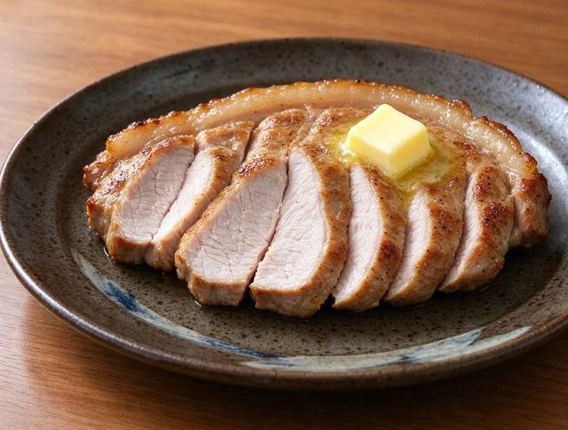
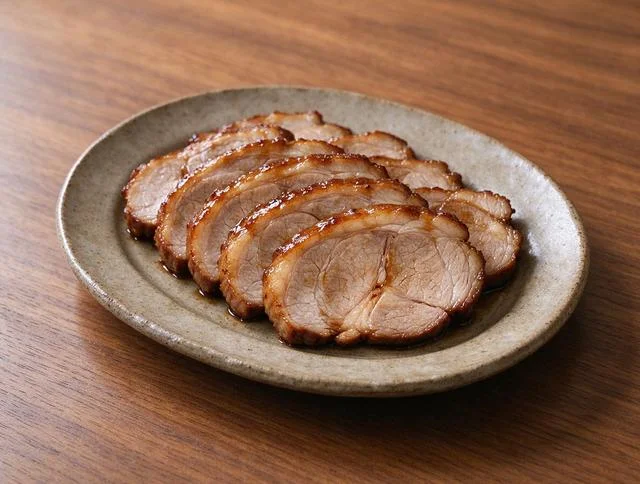
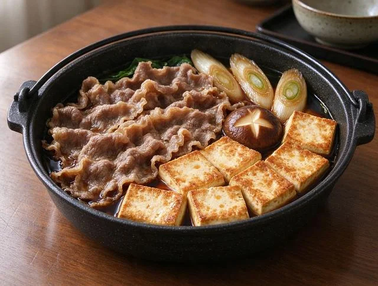

すべての目次料理
ちゃんと「いただく」方法
今日のお肉は、どう食べよう。焼き目が香ばしい一皿、ころもがさくっとする一皿、汁ごと味わう一皿。使いたいお肉や味から、作りたい料理を選べます。
 炭火で焼くスペアリブのたれは、ここで塗る骨つきの肉を炭火で。たれをぬるのは仕上げです。
炭火で焼くスペアリブのたれは、ここで塗る骨つきの肉を炭火で。たれをぬるのは仕上げです。 鍋で煮込む牛すねを、スプーンでほどけるシチューに牛すね肉を、にんじんや玉ねぎと、ゆっくり。
鍋で煮込む牛すねを、スプーンでほどけるシチューに牛すね肉を、にんじんや玉ねぎと、ゆっくり。 フライパンで焼く鶏ももの皮を、パリッと焼く皮を下にして焼き、鶏もも肉に香ばしい焼き目を。
フライパンで焼く鶏ももの皮を、パリッと焼く皮を下にして焼き、鶏もも肉に香ばしい焼き目を。 フライパンで炒める豚こまを香ばしい生姜焼きに豚こまを重ねずに広げ、しょうがだれをからめます。
フライパンで炒める豚こまを香ばしい生姜焼きに豚こまを重ねずに広げ、しょうがだれをからめます。 衣をつけて揚げる豚ロースのとんかつを切ってみるころもの内側で、赤身と脂身の食感が変わります。
衣をつけて揚げる豚ロースのとんかつを切ってみるころもの内側で、赤身と脂身の食感が変わります。 鍋で煮る豚こまが少し残ったら、ふたり分の豚汁に豚こまと根菜。だしのきいた汁も、一皿のうち。
鍋で煮る豚こまが少し残ったら、ふたり分の豚汁に豚こまと根菜。だしのきいた汁も、一皿のうち。台所の基本


写真から選ぶ、30皿のレシピ
焼く・串に刺す
 砂肝のにんにく焼きにんにくを弱火で焼いてから、その油で砂肝を焼きます。
砂肝のにんにく焼きにんにくを弱火で焼いてから、その油で砂肝を焼きます。 手羽先の塩焼き手羽先を皮のほうから焼き、ふたをして火を通します。
手羽先の塩焼き手羽先を皮のほうから焼き、ふたをして火を通します。 鶏もものたれ焼き串鶏ももをさいころ形に切って串に刺し、甘辛いたれはあとから。
鶏もものたれ焼き串鶏ももをさいころ形に切って串に刺し、甘辛いたれはあとから。 砂肝の塩串砂肝のかたい銀皮をそぎ、厚みをそろえて串に刺します。
砂肝の塩串砂肝のかたい銀皮をそぎ、厚みをそろえて串に刺します。 手羽先のしょうゆ照り焼き手羽先は皮から焼き、出てきた脂をふき取ってからしょうゆだれを入れます。
手羽先のしょうゆ照り焼き手羽先は皮から焼き、出てきた脂をふき取ってからしょうゆだれを入れます。
厚切りポークのバター焼き厚切りの豚ロースをこんがり焼き、ふたをして火を通します。
豚肩ロースのみそ焼き豚肩ロースに、みりんと酒でのばしたみそをからめます。 豚肉のおろしだれ焼き焼いた豚ロースはいったん皿へ。
豚肉のおろしだれ焼き焼いた豚ロースはいったん皿へ。 豚のしょうが焼きと千切りキャベツ豚ロースを広げて焼き、最後にしょうがだれを手早くからめます。
豚のしょうが焼きと千切りキャベツ豚ロースを広げて焼き、最後にしょうがだれを手早くからめます。 牛ももステーキのからし添え牛もものステーキを焼いたら少し休ませ、肉の線をまたぐ向きに薄く切ります。
牛ももステーキのからし添え牛もものステーキを焼いたら少し休ませ、肉の線をまたぐ向きに薄く切ります。 厚切り牛の黒こしょう焼き厚切りの牛肉に塩と粗びき黒こしょうを押しつけ、片面ずつ焼き色をつけます。
厚切り牛の黒こしょう焼き厚切りの牛肉に塩と粗びき黒こしょうを押しつけ、片面ずつ焼き色をつけます。 にんにくチップのステーキにんにくを弱火で色づかせ、取り出してから同じ油で牛肉を焼きます。
にんにくチップのステーキにんにくを弱火で色づかせ、取り出してから同じ油で牛肉を焼きます。煮る・汁にする
 鶏レバーのしょうが煮鶏レバーを、細く切ったしょうがとしょうゆで煮ます。
鶏レバーのしょうが煮鶏レバーを、細く切ったしょうがとしょうゆで煮ます。 手羽のねぎスープ骨つきの手羽元を、しょうがと一緒に弱火で煮るスープです。
手羽のねぎスープ骨つきの手羽元を、しょうがと一緒に弱火で煮るスープです。 豚ばらと大根のだし煮まず大根をだしで煮て、竹串が通り始めたら豚ばらを一枚ずつ入れます。
豚ばらと大根のだし煮まず大根をだしで煮て、竹串が通り始めたら豚ばらを一枚ずつ入れます。 豚の角煮、からし添え角切りの豚ばらは、まず表面を焼き、しょうがと一緒にゆでます。
豚の角煮、からし添え角切りの豚ばらは、まず表面を焼き、しょうがと一緒にゆでます。 牛肉のしょうがしぐれ煮細切りのしょうがを入れた煮汁に、牛肉をほぐしながら加えます。
牛肉のしょうがしぐれ煮細切りのしょうがを入れた煮汁に、牛肉をほぐしながら加えます。
牛肉と焼き豆腐のすき煮焼き豆腐と長ねぎを、まずだしとしょうゆで煮ます。 牛薄切り肉の肉じゃがほぐした牛薄切り肉と野菜を炒め、だしで煮る肉じゃがです。
牛薄切り肉の肉じゃがほぐした牛薄切り肉と野菜を炒め、だしで煮る肉じゃがです。 牛すね肉と根菜の和風煮込み牛すねを先にしょうがと煮てから、大きめに切った大根とにんじんを加えます。
牛すね肉と根菜の和風煮込み牛すねを先にしょうがと煮てから、大きめに切った大根とにんじんを加えます。切り分ける・和える
 しっとり酒蒸し鶏鶏むねの厚いところを開いてそろえ、酒と水で蒸します。
しっとり酒蒸し鶏鶏むねの厚いところを開いてそろえ、酒と水で蒸します。 蒸し鶏ときゅうりのごま酢和え蒸したささみを細くさき、きゅうりの細切りと合わせます。
蒸し鶏ときゅうりのごま酢和え蒸したささみを細くさき、きゅうりの細切りと合わせます。 オーブンで焼くローストビーフ牛もものかたまりにフライパンで焼き色をつけてから、オーブンへ。
オーブンで焼くローストビーフ牛もものかたまりにフライパンで焼き色をつけてから、オーブンへ。 牛肉の薄切りレモン焼き牛ももを重ねず、何回かに分けて焼きます。
牛肉の薄切りレモン焼き牛ももを重ねず、何回かに分けて焼きます。 豚ヒレのソテー、しょうゆソース厚めに切った豚ヒレを両面焼き、少しの水を加えてふたをします。
豚ヒレのソテー、しょうゆソース厚めに切った豚ヒレを両面焼き、少しの水を加えてふたをします。揚げる・炒める
 鶏のから揚げ、レモン添え
鶏のから揚げ、レモン添え 千切りキャベツとロースかつ
千切りキャベツとロースかつ 牛肉のねぎ塩炒め
牛肉のねぎ塩炒め ひと口牛カツ
ひと口牛カツ料理のあと、もう少し
- 煮こんだ牛すね肉は、牛のどこ？
よく動くあしの場所を見て、長く煮ると食感が変わる理由をたどれます。
- 骨つき肉は、どこの骨？
ぶたの体の絵で、スペアリブの骨と、そのまわりにある肉の位置を確かめられます。